Márcio ClaroPoda de árvores e Cata-bagulho
Resultados, organização e inteligência operacional. Uma Regional que transforma demandas em resultados.
Contexto institucional
A Regional conecta as necessidades da população à execução dos serviços de zeladoria e manutenção urbana.
Compromisso: transformar demandas em ações concretas, aproximando a Prefeitura da população e promovendo bairros mais organizados, seguros e bem cuidados.

A análise primária identificou que o início dos serviços era controlado apenas por Ordens de Serviço em papel, que estavam desorganizadas e não seguiam um padrão. A partir desse diagnóstico, foi implantada uma evolução em três fases, com foco na padronização, eficiência e rastreabilidade.
Os registros físicos eram a principal referência para identificar e recuperar as demandas e os atendimentos realizados.
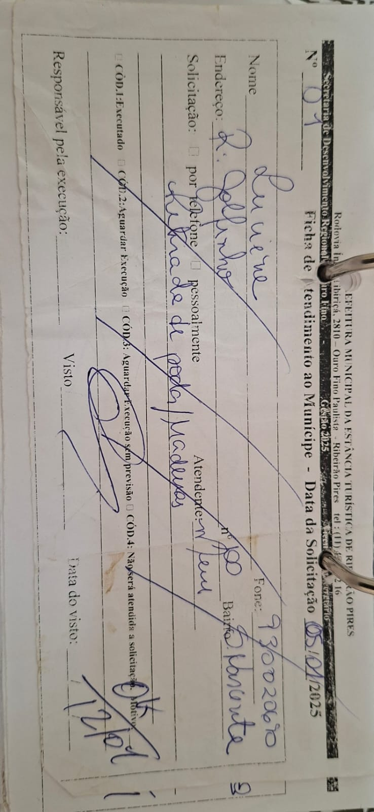
A Ordem de Serviço passou a funcionar como unidade de registro, acompanhamento e comprovação do atendimento.
Entrada → classificação → execução → conclusão
O gráfico de distribuição por origem permanece reservado para quantidades consolidadas.
Consolidação manual; aproximadamente quatro dias para reunir dados e produzir indicadores.
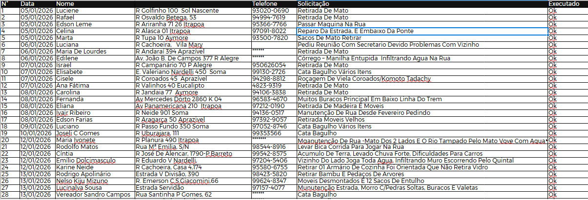
Sistema em HTML para organizar registros e gerar planilhas Excel.
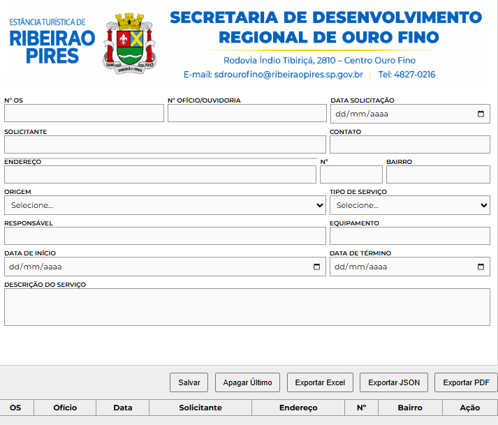
Na fase 2, as ruas, avenidas e seus elementos estavam armazenados diretamente dentro do arquivo HTML. Com o crescimento da estrutura, o navegador começou a apresentar estouro de pilha (Stack Overflow).
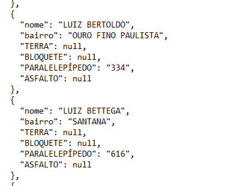
Solução adotada: separar os dados da aplicação, criando um banco de dados externo para consulta e inserção das vias nas Ordens de Serviço e outro banco de dados para armazenar as demandas das Ordens de Serviço.
Integração da base de vias públicas com a base de Ordens de Serviço.
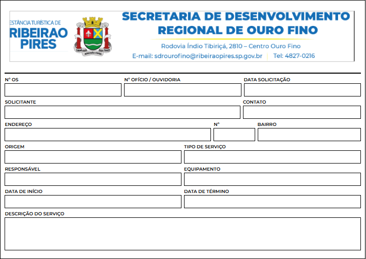
Resultado institucional: redução do trabalho manual, maior consistência cadastral e ampliação da capacidade de acompanhamento.
Para padronizar e mensurar os serviços, foi necessário realizar e revisar o levantamento de todas as ruas, vielas, escadões e avenidas da cidade. Também foram promovidas mudanças administrativas para compreender, distribuir e calcular os serviços automaticamente, por meio de parametrização.
AVENIDA
Via que atravessa mais de um bairro ou conecta Ribeirão Pires a outro município.
RUA
Via de circulação local.
TRAVESSA
Via geralmente mais estreita ou curta, sem saída.
VIELAS E ESCADÕES
Categorias específicas em processo de inclusão e consolidação.
Tokio → Tóquio
Boomerang → Bumerangue
Bottacin/Botaccin/Botacim → Bottacin
Avenida Fortuna → Rua Fortuna
Revisão permanente da nomenclatura, continuidade e classificação das vias públicas.
A ampliação do cadastro incorporou novas categorias territoriais, além de atualizar a quantidade de ruas e avenidas.
A iniciativa de levantamento e padronização surgiu de uma demanda anterior por uniformização, identificada durante o mapeamento das bocas de lobo e bocas de leão. Esse mapeamento permitiu identificar com precisão quais ruas possuem galerias de águas pluviais sob responsabilidade da Prefeitura, embasando a tomada de decisão e o encaminhamento de apontamentos assertivos à Sabesp. Nos locais sem galeria de águas pluviais, a situação pode envolver estruturas de esgotamento sanitário sob responsabilidade da concessionária, cuja atribuição deve ser verificada conforme o caso.
A apresentação mantém a classificação e a nomenclatura do material de prestação de contas.
Foi criado um programa on-line com uma interface (front-end) reativa, capaz de atualizar as informações exibidas conforme os registros são inseridos ou alterados no sistema.
Reatividade (Reactivity): os componentes da interface respondem às mudanças nos dados, atualizando automaticamente indicadores, listas e visualizações relacionadas, sem exigir que o usuário refaça manualmente as consultas.
Atualização em tempo real (Real-time updates): as informações podem ser refletidas na interface à medida que novos registros são recebidos ou modificados na fonte de dados conectada, permitindo acompanhamento mais ágil das Ordens de Serviço.
A atualização depende da conexão ativa e dos mecanismos de sincronização configurados entre a aplicação e a base de dados.
Foram definidos campos com opções pré-estabelecidas para padronizar as medidas e classificações utilizadas no registro e na mensuração dos serviços.
Listas fechadas: disponibilizam opções pré-definidas para medidas padrão, reduzindo variações de preenchimento, divergências de nomenclatura e erros de classificação.
Padronização: os registros passam a utilizar valores controlados, permitindo comparar informações e aplicar critérios de cálculo de maneira consistente.
Aplicação: os domínios orientam o preenchimento dos campos e a parametrização dos indicadores operacionais.
Nivelamento
Metragem estimada a partir da extensão das vias.
Capinação
Metragem estimada com base na extensão das vias.
Varrição
Metragem estimada com base na extensão das vias.
Manutenção e reparo em vias
Metragem estimada conforme parâmetros definidos.
Cata-bagulho
Estimativa de tonelagem por Ordem de Serviço.
Nota: parâmetros administrativos estimados; não equivalem a pesagens ou medições físicas individuais sem comprovação direta.
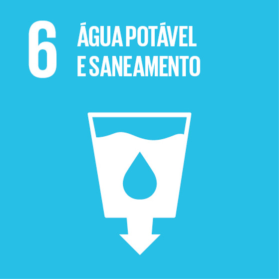
Drenagem, limpeza de bocas de lobo, desassoreamento e escoamento pluvial.
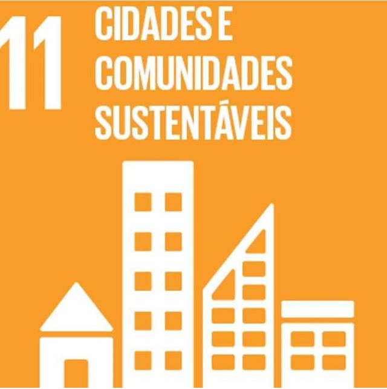
Conservação viária, capinação, varrição e manutenção de espaços públicos.
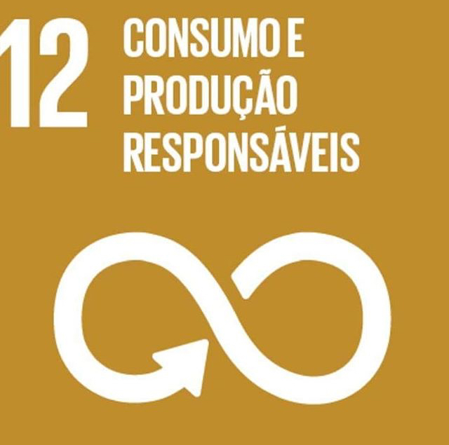
Cata-bagulho, resíduos volumosos e redução de descartes irregulares.
Poda, remoção necessária e manejo da vegetação.
Janeiro a outubro
Jan–jun: dados recuperados de documentos físicos. Jul–out: metodologia sistemática implantada. Novembro não é mês concluído.
A série apresenta ampliação do volume operacional a partir de julho, com pico em agosto e manutenção de patamar elevado em setembro e outubro. Não comparar diretamente os métodos de coleta sem considerar a recuperação documental do primeiro semestre.
07/09 · Feriado nacional
Capinação e varrição podem apresentar redução de produtividade. Nivelamento de vias de terra pode ficar comprometido ou impossibilitado quando o solo está inadequado.
Prioridade operacional: nivelamento deve ser priorizado em situações emergenciais, quando houver condições.

Secretaria de Desenvolvimento Regional de Ouro Fino Paulista


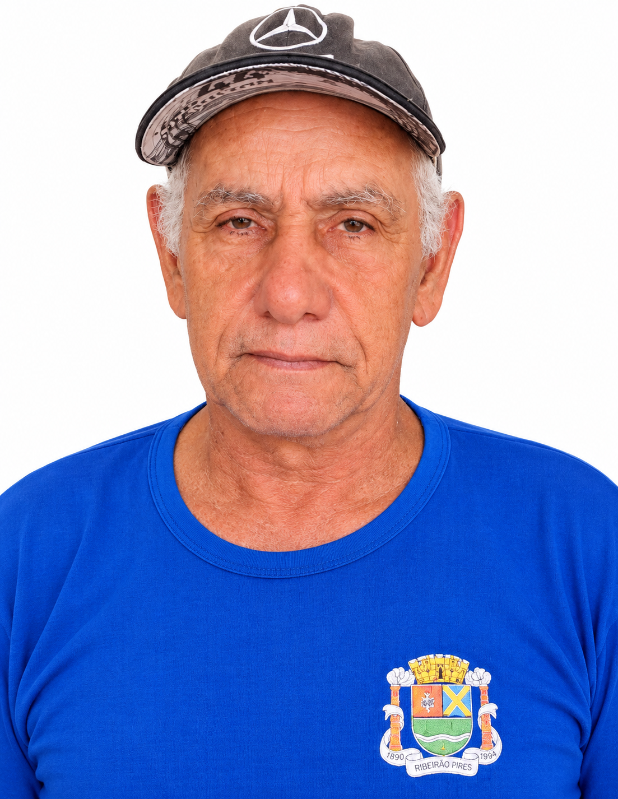
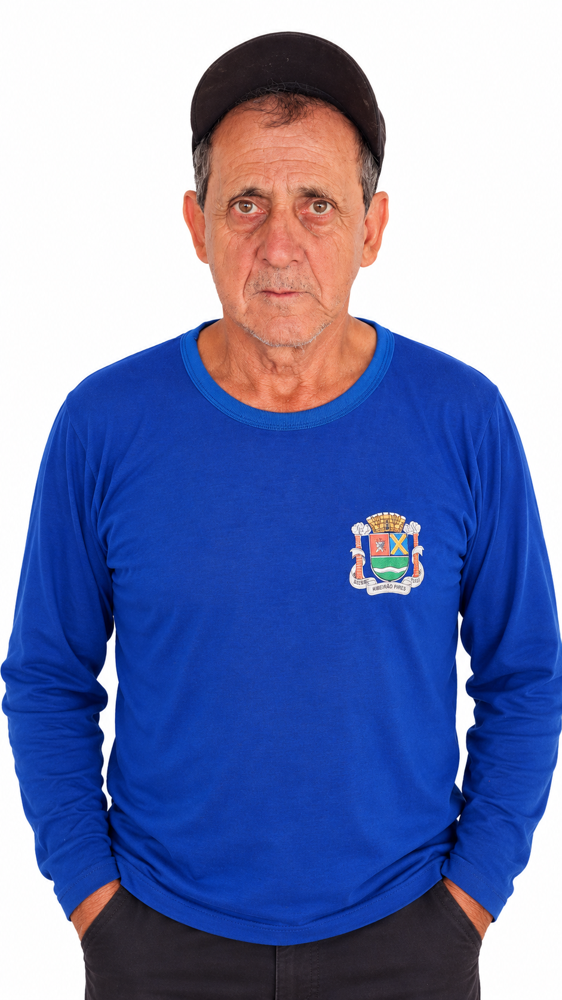
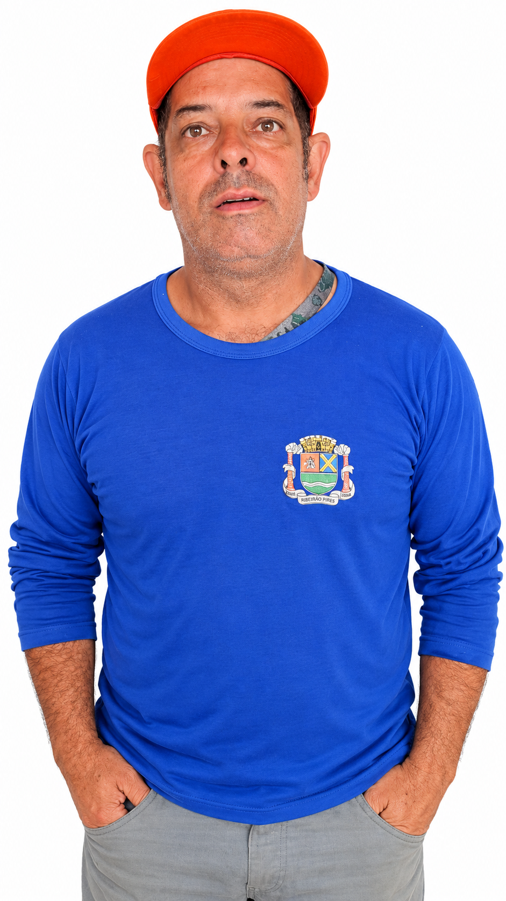

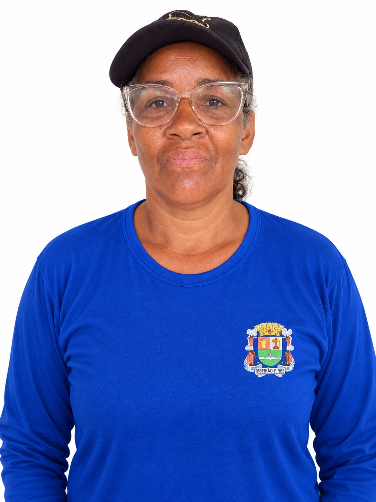
Frente de trabalho
Registros visuais das frentes de trabalho da Regional.
As fotografias serão exibidas sem apresentar os nomes técnicos dos arquivos.
A Regional avançou na organização dos processos administrativos, na padronização das informações territoriais e na implantação de ferramentas de acompanhamento.
Mais do que executar serviços, o trabalho busca consolidar uma gestão organizada, transparente e comprometida com as necessidades da população.
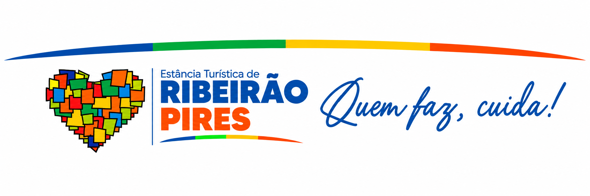